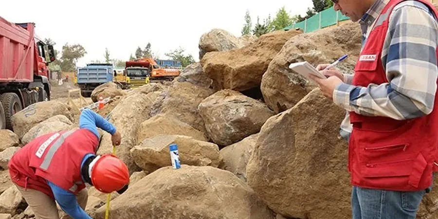

En nuestra oficina local, ofrecemos servicios integrales de geotecnia para proyectos en Alto Hospicio, combinando experiencia regional con equipos calibrados y reportes conforme a la normativa chilena. Desde la caracterización del subsuelo mediante muestreo inalterado hasta el diseño de cimentaciones y análisis de asentamientos, acompañamos cada etapa del desarrollo urbano e industrial. Nuestro enfoque abarca también estudios de respuesta sísmica, monitoreo de taludes y estabilización de suelos, garantizando soluciones seguras y eficientes para edificaciones, infraestructura vial y obras mineras en esta zona de alto crecimiento.

Imagen técnica de referencia — Alto Hospicio
Metodología y alcance
Alto Hospicio se asienta sobre la Pampa del Tamarugal, una extensa llanura aluvial conformada por depósitos de gravas, arenas y limos provenientes de la Cordillera de los Andes. El perfil típico del subsuelo incluye una capa superficial de suelos coluviales y eólicos, seguida por estratos de gravas arenosas con matriz limosa de alta compacidad, conocidas localmente como 'gravas de la pampa'. El nivel freático es profundo, generalmente por debajo de los 50 metros, lo que reduce riesgos de licuación pero exige atención a la subsidencia por extracción de agua subterránea. La zona presenta una sismicidad moderada a alta, asociada a la subducción de la placa de Nazca, con aceleraciones máximas del suelo que requieren estudios específicos de respuesta sísmica. Además, los taludes de la cordillera de la Costa, al oeste de la ciudad, presentan potencial de deslizamientos y caídas de rocas, especialmente durante eventos lluviosos extremos vinculados al fenómeno de El Niño.
Consideraciones locales
Nuestra firma cuenta con experiencia consolidada en la Región de Tarapacá, habiendo participado en estudios de mecánica de suelos para conjuntos habitacionales, obras viales y campamentos mineros en Alto Hospicio e Iquique. Disponemos de un laboratorio de suelos calibrado y equipos de campo para ensayos de MASW-Vs30 y presurómetro, que nos permiten obtener parámetros precisos para el diseño sísmico. Coordinamos estrechamente con la Dirección de Obras Municipales y contratistas locales para asegurar que todos los informes cumplan con la normativa vigente, facilitando la aprobación de proyectos.
En Chile, los estudios geotécnicos se rigen por la norma NCh 433 (Diseño sísmico de edificios) y su decreto DS 61, que exige ensayos de penetración estándar (SPT) según NCh 3392 para caracterizar suelos granulares. Para cimentaciones profundas se aplica la NCh 1716, mientras que la caracterización de rocas sigue la norma NCh 165. En proyectos mineros e industriales se emplean además las guías del SERNAGEOMIN y la norma chilena NCh 3191 para estabilidad de taludes. La instrumentación geotécnica se realiza conforme a NCh 1517 y D422 para clasificación de suelos.
Preguntas frecuentes
¿Cuáles son los principales desafíos geotécnicos en Alto Hospicio?
Los mayores desafíos incluyen la presencia de gravas muy densas que dificultan la excavación y la hinca de pilotes, la necesidad de evaluar la respuesta sísmica del suelo debido a la alta sismicidad de la zona, y el control de asentamientos en suelos colapsables. Además, los taludes de la cordillera de la Costa requieren monitoreo constante para prevenir deslizamientos.
¿Qué tipo de cimentación es más común en los proyectos de Alto Hospicio?
Para edificios de hasta 5 pisos se utilizan cimentaciones superficiales (zapatas corridas o losas de fundación) apoyadas en las gravas densas. En estructuras mayores o cuando se requieren cargas elevadas, se emplean pilotes excavados o hincados, previo estudio de capacidad de carga mediante ensayos de penetración y presurómetro.
¿La normativa chilena exige estudios de microzonificación sísmica para proyectos en Alto Hospicio?
Sí, la NCh 433 y el DS 61 exigen que para proyectos de importancia (hospitales, colegios, edificios altos) se realice un estudio de respuesta sísmica del sitio. En Alto Hospicio, dado que el suelo es predominantemente de tipo B o C según la clasificación sísmica, se recomienda complementar con ensayos de velocidad de onda de corte (Vs30) para definir correctamente el espectro de diseño.
¿Qué consideraciones debo tener para construir cerca de los taludes de la cordillera de la Costa?
Es fundamental realizar un estudio de estabilidad de taludes que incluya análisis de equilibrio límite y modelación numérica, considerando la presencia de bloques rocosos y la posibilidad de lluvias intensas. Se recomienda implementar sistemas de drenaje superficial y profundo, y en casos críticos, instalar mallas dinámicas o barreras de contención, además de un monitoreo periódico con inclinómetros y extensómetros.